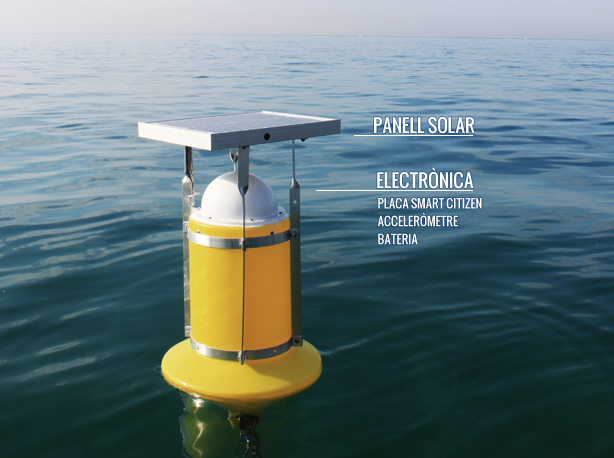
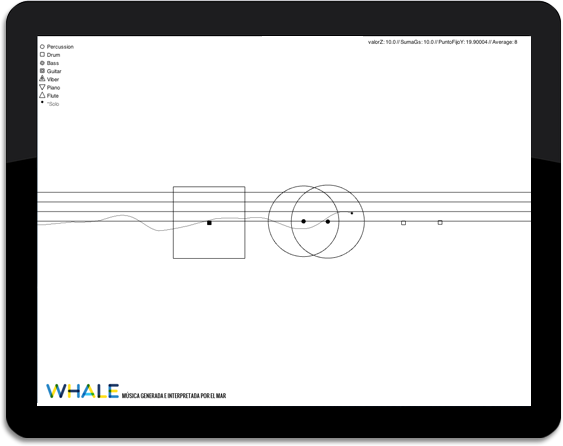
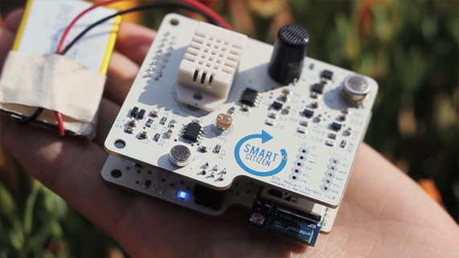

Whale és un projecte de música i art generatiu sobre el mar.
A partir de una boia ubicada al mar mediterrani, es genera música y es va creant una obra gràfica única, durant el transcurs del dia, que representa l’estat del mar.
FAQS
COM FUNCIONA?
Una boia envia dades en temps real sobre el moviment del mar, amb les dades es genera música en el xiringuito i una obra gràfica.
Whale és un sistema format per la interacció dels següents elements:
Boia: Una boia ubicada al mar, equipada amb una placa Smart Citizen i un acceleròmetre, emet en temps real a través d’una connexió Wifi, dades sobre el moviment del mar.
Router:
Un router capta la senyal de la boia i la transmet a una CPU ubicada en el xiringuito Espigó Platja, en la platja de Sant Andreu de Llavaneres.
CPU:
Una CPU processa la informació a través d’una aplicació desenvolupada en Processing i genera la música en directe simultàniament al xiringuito.
A més amb aquesta mateixa informació, un altre programa va generant un gràfic en temps real, el qual és una representació visual única del estat del mar d’aquest mateix dia.
Internet:
Quan el sistema està en funcionament, un arxiu XML amb la informació de la boia s’actualitza a Internet en temps real. A més la imatge que s’ha generat es publica de forma automàtica i pot ser vista des de tot el món.

COM ES GENERA LA MÚSICA?
La música es genera a partir de la informació del moviment del mar retransmès per una boia equipada amb una placa Smart Citizen.
Una aplicació creada en Processing, es va activant, desactivant i transformant en una sèrie de tracks musicals del gènere Jazz Bossanova, que formen una melodia infinita, la qual és una representació musical del estat del mar.

COM SONA LA MÚSICA?
Aquí tens un MP3 de mostra de com sona la música. Cal tenir en compte que en la instal·lació la música sempre és diferent.
També podeu descarregar una mostra de MP3 per escoltar en qualsevol lloc.
QUÈ SÓN LES PLAQUES SMART CITIZEN?

Esmart Citizen és una plataforma basada en un software i hardware en codi obert, per la participació ciutadana en la producció de la ciutat.
Les plaques Esmart Citizen estan pensades per ser utilitzades com a detectors ambientals en els balcons de les ciutats. Funcionen gràcies a una placa solar i es connecten a Internet mitjançant Wifi, a una plataforma online, des d’on es poden consultar totes les dades.
La transmissió i generació de les dades de la boia de Whale es realitza gràcies a una placa Smart Citizen equipada amb un acceleròmetre.
ON ES TROBA UBICADA LA BOIA?
La boia es troba al mar mediterrani, davant el passeig marítim de Sant Andreu de Llavaneres, província de Barcelona, a uns 50 metres del Xiringuito Espigó.
QUI SÓN ELS ARTÍFEXS D’AQUEST PROJECTE?
Els artífexs del projecte són Gonzalo Zaragoza, creatiu tecnològic i Anastasio Fonolla, propietari del xiringuito Espigó Platja.
L'electrònica ha estat desenvolupada al laboratori d'interacció d'Hangar amb l'ajuda de Miquel Àngel de Heras i per Alex Posada cap de projectes de MID i un dels precursors del projecte Smart Citizen. A més Alex ha estat una part molt important en el procés creatiu.
El projecte no hauria estat possible sense la participació desinteressada de:
Ricardo Gala i Jonathan González de Bittenbit. Han creat l’acceleròmetre i han realitzat una feina de consultoria valiosíssima durant tot el projecte.
Juan Zaragoza. Mariner per vocació i arquitecte jubilat l'ajuda amb la part mecànica de la boia i logística del projecte ha estat vital.
COM I QUAN PUC ESCOLTAR LA MÚSICA?
De moment la música només es pot escoltar en l’Espigó Platja tots els dies de 18h a les 20h i en moments puntuals durant el dia, segons les circumstàncies. S’estan preparant activitats lligades al voltant d’aquesta música, per més informació es pot consultar: www.espigoplatja.com/agenda
En un futur es possible que la música es pugui escoltar des de qualsevol lloc a través d’Internet.
COM PUC VEURE LES IMATGES GENERADES PER WHALE
Cada dia es publica una obra única i irrepetible que representa l’estat del mar durant aquest mateix dia. Es possible consultar una galeria d’imatges amb cadascuna de les obres aquí
VISUALITZACIONS
Una obra gràfica es genera cada dia a partir del les dades obtingudes en temps real del moviment del mar.
Aquest gràfics es publiquen just després de generar-se i són una obra única representativa del estat del mar.
Hem creat un compte a Instagram amb modalitat de making of per imatges del projecte, si ho desitja pot visitar la pàgina a:instagram.com/thewhalemusicproject